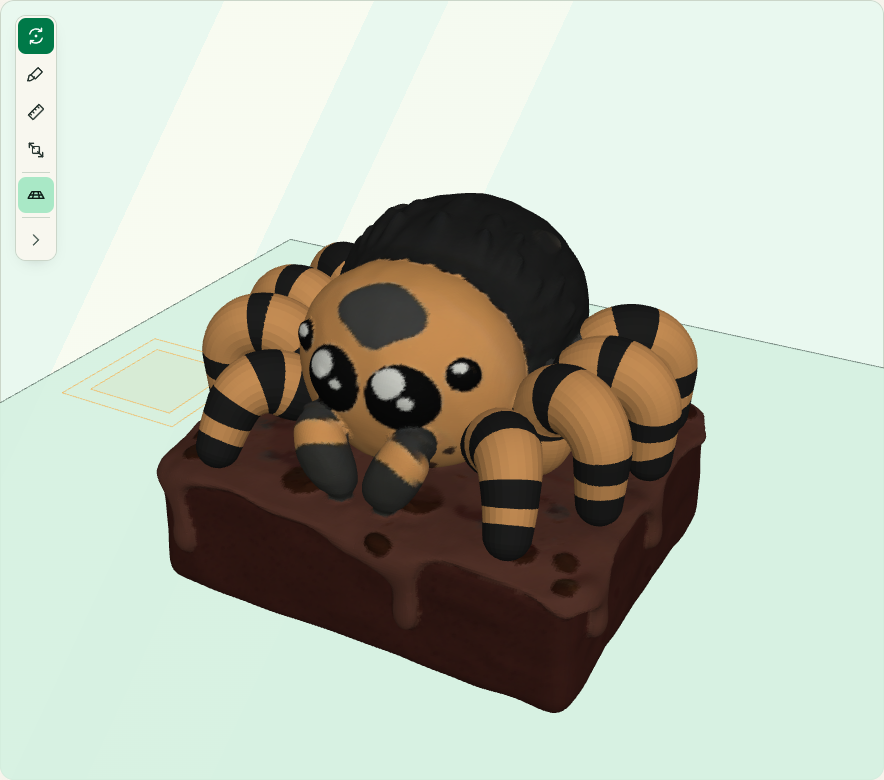

Trae tu modelo.
Abre tu archivo de Blender. BlendParser lee la forma y los colores que ya tiene.

Lleva tus modelos de Blender a la impresión multicolor.
Del modelo en pantalla al archivo que prepararás para imprimir.
Abre tu archivo de Blender. BlendParser lee la forma y los colores que ya tiene.
La app propone una paleta. Puedes cambiarla para acercarla a los filamentos que tienes.

Exporta el archivo 3MF y ábrelo en Bambu Studio. Allí eliges los ajustes y preparas la impresión.
Arrastra la línea y compara la textura con los colores de filamento.

TexturaFilamentoPrepara el color, ajusta la geometría y elige cómo exportar.
Aquí van las primeras respuestas.
El material de la impresora. Cada bobina tiene un color.
El sistema de Bambu Lab que cambia automáticamente entre bobinas.
El archivo con tu modelo y sus colores para Bambu Studio.
Prepara el modelo. Bambu Studio organiza la impresión.
Para Windows y Linux.
Encuentra versiones e instrucciones en GitHub.
Consulta las versiones disponibles en GitHub.
Todas las versiones y notasBlender debe estar instalado. En Windows, el instalador sin firma puede mostrar un aviso de SmartScreen.